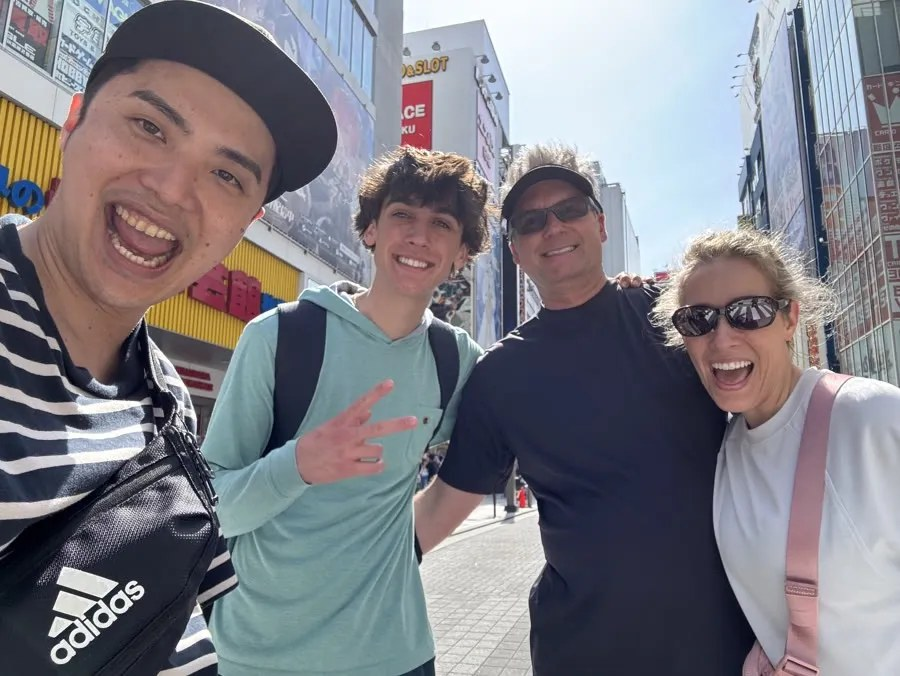
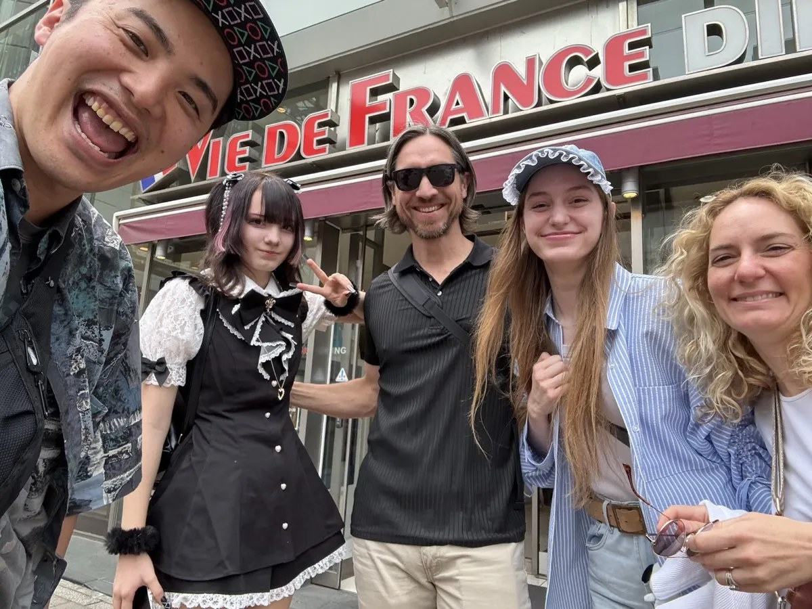
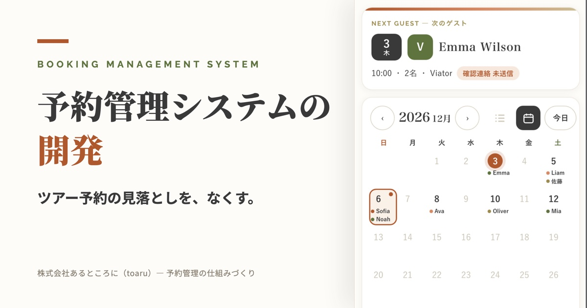
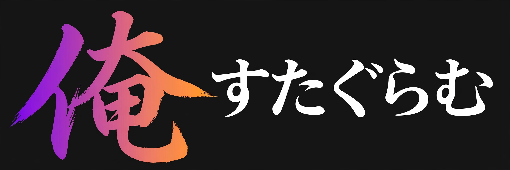
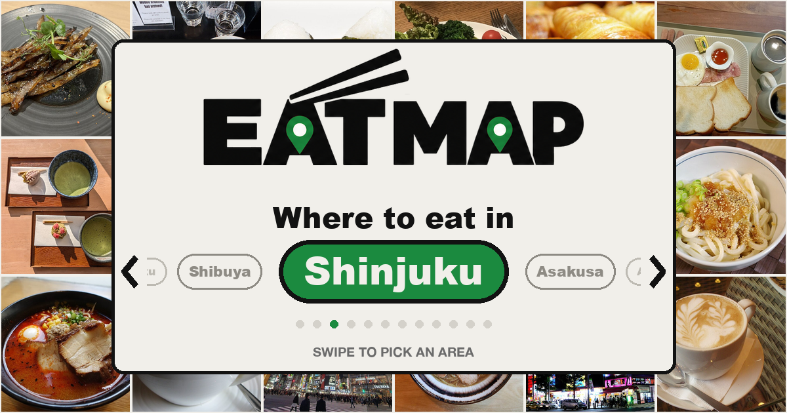
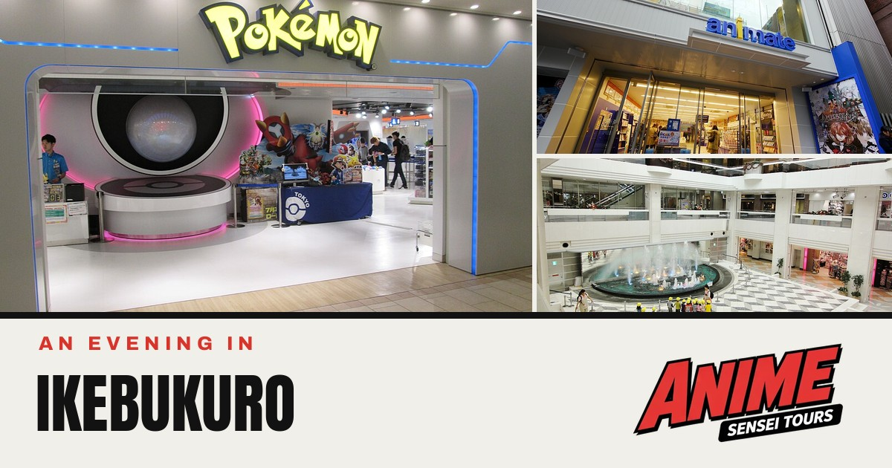
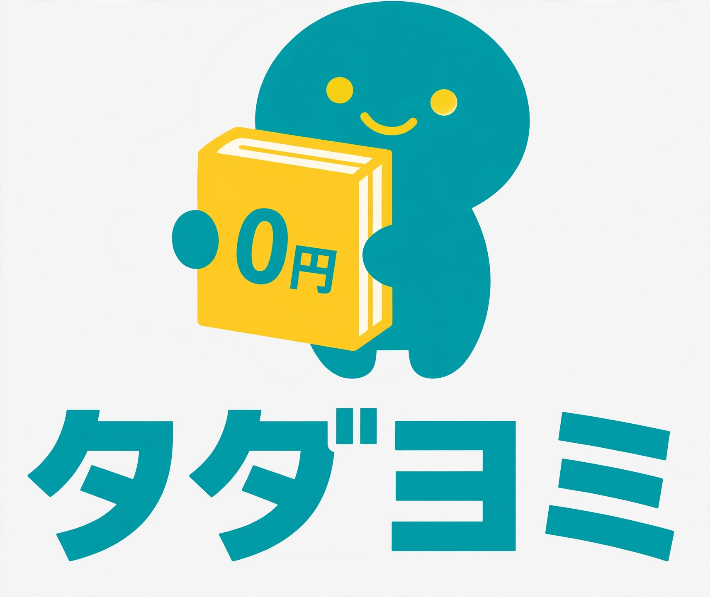
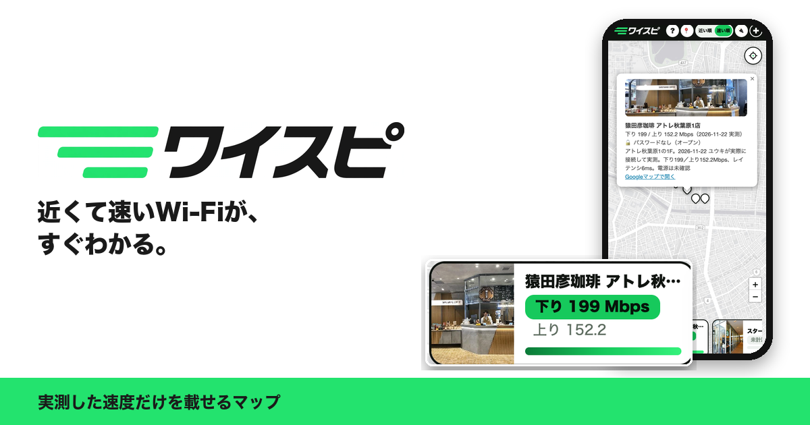
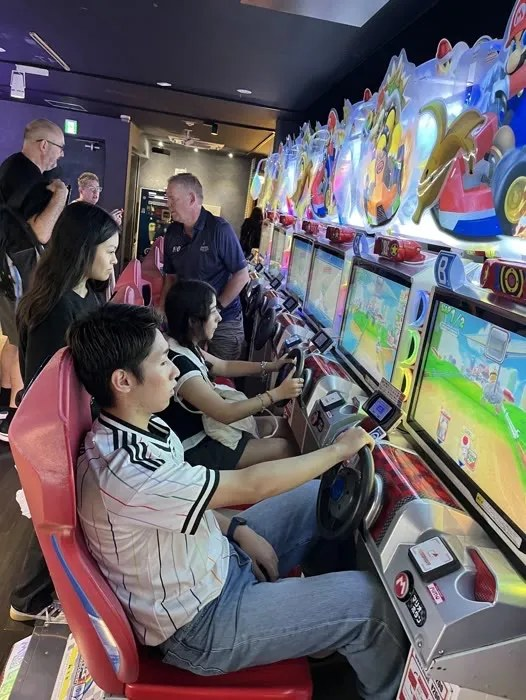
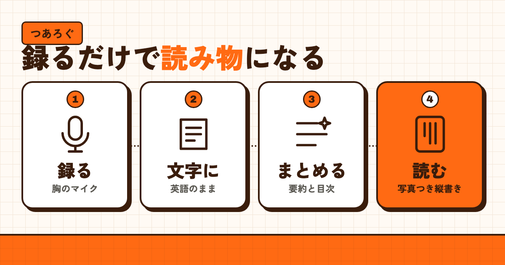

本業・毎日稼働
Anime Senseiインバウンド体験ツアー
秋葉原・浅草・池袋・中野を案内するアニメとオタク文化のプライベートツアー。Airbnb Experiencesで評価4.96・レビュー171件。GetYourGuide・Viator・Klook・tourHQと自社予約で販売し、Manga Dojo Tokyo・Japan Local Experience・Oshinobi Travelなど事業者経由のカスタムツアーも受託している。
せっかくの機会を顔合わせだけで終わらせないための準備ページ。自分が作ってきたものと実績の棚卸し、上田さんやガイアックスの関心領域と重なりそうな接点を先に整理しておく。


屋号はYuTaka。東京を拠点に訪日客向け体験ツアーとAI活用支援を手がける個人事業主であり、ADDress会員として都内近郊の拠点を使いながら活動している。
ガイドの現場とシステム開発とデザインを一人で回すのが持ち味。作ったものは全部自分で毎日使い、現場で直し続けている。
italkiでは世界各国の生徒にオンラインで日本語を教えている。訪日客の生の声と日本のどこに惹かれているかに日常的に触れられる接点になっている。
作って終わりではなく、毎日使って直し続けているものだけを並べた棚。写真は全部その作品そのもの。
秋葉原・浅草・池袋・中野を案内するアニメとオタク文化のプライベートツアー。Airbnb Experiencesで評価4.96・レビュー171件。GetYourGuide・Viator・Klook・tourHQと自社予約で販売し、Manga Dojo Tokyo・Japan Local Experience・Oshinobi Travelなど事業者経由のカスタムツアーも受託している。

自分のツアー事業のために作った予約管理の仕組み。複数OTAとCal.comの予約突合、カレンダー連携、ゲストカルテ、写真納品、レビュー返信までを一元化した。毎朝の照合と夜間の自動在庫ブロックで二重販売を防ぐ。金沢のツアー事業者向けには同種のシステムを受託開発中。

撮りためた写真を日付と移動の記録とともに振り返る写真日記サービス。111日分・6,600枚超の写真をInstagram風の画面で眺められる。ロゴの筆文字とUIは自作。自宅サーバーで動かし続けている。

自分が実際に食べた店だけを載せる食事マップ。エリア切替と手描き風の地図、写真つきピンの見せ方を設計した。訪日客への案内と自分の店選びの両方に使っている。


各漫画サービスで無料公開中の作品を横断収集するポータル。期間限定の全巻無料を優先表示するのが核。毎朝7時に自動更新している。ティールのマスコットとロゴタイプも自作。

見た目のデザインと裏側の仕組みの両方を自分で作るのが仕事の進め方。
俺すたぐらむの筆文字ロゴ、タダヨミのマスコット、eatmapのロゴタイプ。サービスの顔は全部自分で描く。
ゲストページとLPとOGP画像を一貫した型で設計する。写真の選び方と余白と文字の置き方まで自分で決める。

ツアー写真の撮影と選抜と傾き補正、ゲストへの納品まで。写真がそのまま商品になる仕事だと考えている。
OTAとカレンダーの突合、ゲストカルテの生成、夜間の自動在庫ブロック。だんどりーの中核。毎朝の確認作業を仕組みに置き換えた。
ツアー当日の写真からギャラリーを作り、公開ページとInstagram投稿までを半自動で回す後処理の仕組み。
収録から自動編集と検品、公開予約、音声の読み物版への展開までをパイプライン化した。ツアーと民泊とコーヒーとAIの複数番組で運用中。

話の種ADDressの拠点に滞在する会員や訪日客向けにアニメ文化体験や街歩きガイドを提供する小さな実証。葉山滞在中に試作版を開く形も考えられる。
接点ADDressはガイアックスから生まれた多拠点生活サービスであり、拠点ごとに滞在者同士や地域との交流を生むことが核にある。体験の現場を持つガイドが拠点側へ入る形は相性がよい。
最初の一歩葉山か都内近郊の1拠点で試験開催ができるか聞いてみる。
話の種金沢のツアー事業者へのシステム提供やガイド志望者の紹介など、東京以外の地域でも「その土地の人が案内する体験」を束ねる動きを作っている。
接点ガイアックス生まれのTABICAと投資先のロコタビは地域のホストが体験を提供するプラットフォーム。ホストの供給づくりと育成の話は共通言語になる。
最初の一歩金沢の事例を紹介し、ホスト獲得と育成の課題感を聞く。
話の種自社用に作った予約管理システム「だんどりー」を小規模な体験・ツアー事業者向けに展開する構想。予約突合と在庫ブロック、ゲスト対応の下書き生成までを担い、金沢の事業者向けには受託開発も始まっている。
接点ガイアックスはスタートアップスタジオとして事業創出を支援し、ICTソリューション事業も持つ。小さな事業者のDXは起業支援の文脈と重なる。
最初の一歩だんどりーの実画面を見せて、支援対象になり得るか感触を聞く。
話の種ガイアックスの投資先OTERA STAYを運営するシェアウィング代表の加藤明仁さんは旧知の間柄。お寺体験とアニメやインバウンドの文脈を掛け合わせた企画は三者で話せる種になる。
接点OTERA STAYはガイアックスの投資先。体験と滞在を組み合わせる事業同士の接続は自然な流れ。
最初の一歩近況共有から入り、無理に案件化しない。
話の種複数ポッドキャストの制作で構築した自動編集から公開までのパイプラインと音声を読み物記事へ展開する手法。地域やコミュニティの発信を音声で続けるための運用知見として渡せる。
接点ショートドラマCREAVEへの投資など、ガイアックスはコンテンツ領域の新規事業を育てている。音声は制作コストの設計が肝。現場の自動化知見が役立つ場面がある。
最初の一歩制作フローの全体像を見せて、関心の有無を確認する。
話の種ガイドとして訪日客と地域の店をつなぐ日常から見える「関係人口の作られ方」を共有する話。都道府県ごとのキャラクターを入口に地域へ人を集める企画も構想中（まだアイデア段階の未実施案）。
接点群馬県のDAO実証事業やPlanetDAOなど、ガイアックスはDAOと地域活性化の実証を重ねている。現場側の観察は実証設計の材料になる。
最初の一歩実証の現場で困っている論点を聞き、現場の事例で返す。
聞くこと
見せるもの
姿勢